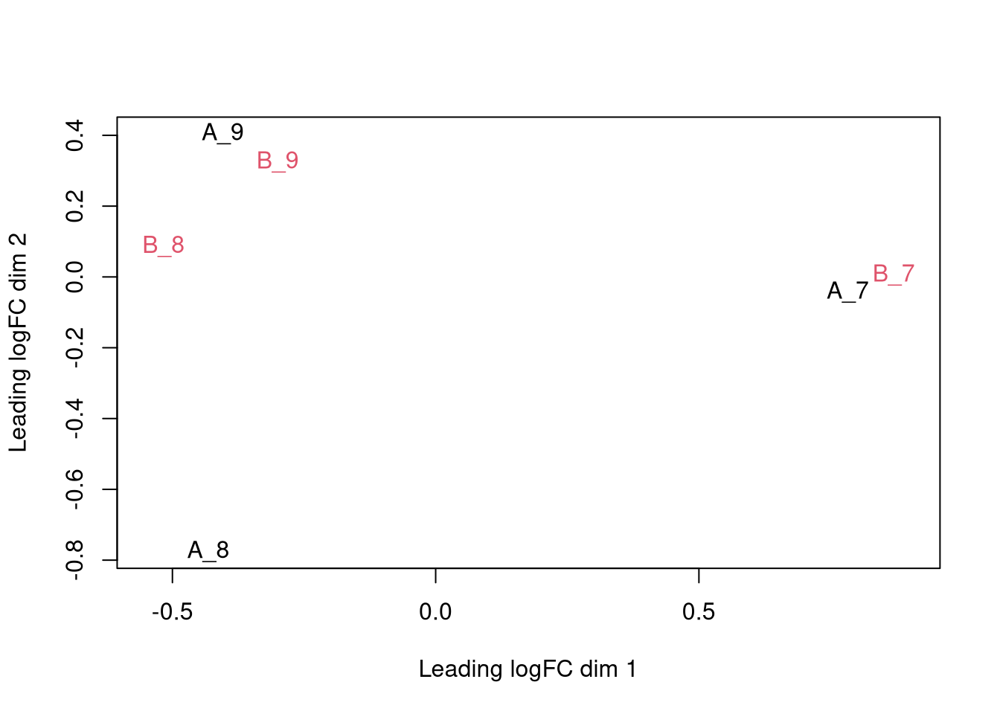
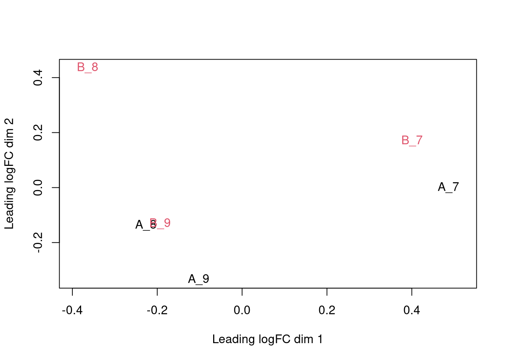
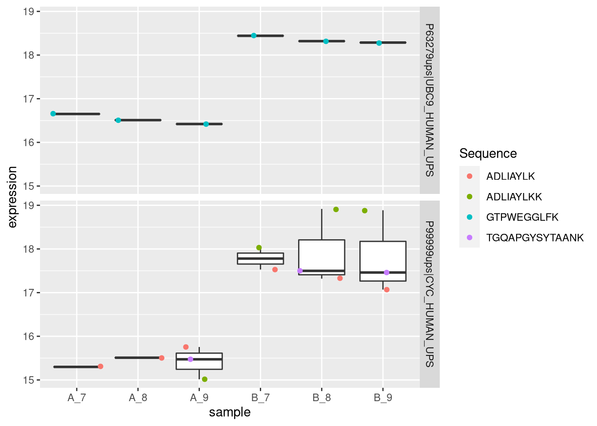

Chapter 5 Quantitative data
There are a wide range of proteomics quantitation techniques that can broadly be classified as labelled vs. label-free, depending whether the features are labelled prior the MS acquisition and the MS level at which quantitation is inferred, namely MS1 or MS2.
| Label-free | Labelled | |
|---|---|---|
| MS1 | XIC | SILAC, 15N |
| MS2 | Counting | iTRAQ, TMT |
In terms of raw data quantitation, most efforts have been devoted to MS2-level quantitation. Label-free XIC quantitation has however been addressed in the frame of metabolomics data processing by the xcms infrastructure.
Below is a list of suggested packages for some common proteomics quantitation technologies:
- Isobaric tagging (iTRAQ and TMT): MSnbase and isobar.
- Label-free: xcms (metabolomics).
- Counting: MSnbase and MSnID for peptide-spectrum matching confidence assessment.
- N14N15 for heavy Nitrogen-labelled data.
5.1 The MSnSet class for quantitative data
Quantitative data is stored in a dedicated data structure called
MSnSet. The figure below gives a schematics of an MSnSet instance
and the relation between the assay data and the respective feature and
sample metadata, accessible respectively with the exprs, fData and
pData functions.

The MSnSet structure
Storing quantitative data in an MSnSet quaranties that the feature
(peptides or proteins) and sample annotations are correctly aligned
with the quantitative data, i.e.
- there is a one-to-one match between the expression data rows and feature meta data rows;
- there is a one-to-one match between the expression data columns and sample meta data rows.
This correspondance is also guaranteed during all data processing and manipulation.
5.2 Isobaric tagging
An MSnExp is converted to an MSnSet by the quantitation
method. Below, we use the iTRAQ 4-plex isobaric tagging strategy
(defined by the iTRAQ4 parameter; other tags are available: see
?ReporterIons) and the max method to calculate the use the maximum
of the reporter peak for quantitation.
plot(msexp[[1]], full=TRUE, reporters = iTRAQ4)Figure 5.1: MS2 spectrum and it’s iTRAQ4 reporter ions.
msset <- quantify(msexp, method = "max", reporters = iTRAQ4)Below, we access the quantitative and metadata slots of the newly
created MSnSet object.
exprs(msset)## iTRAQ4.114 iTRAQ4.115 iTRAQ4.116 iTRAQ4.117
## F1.S1 706555.7 685055.1 929016.1 668245.2
## F1.S2 260663.7 212745.0 163782.8 239142.7
## F1.S3 2213566.0 2069209.6 2204032.2 2331846.8
## F1.S4 616043.4 705976.6 671828.8 666845.6
## F1.S5 1736128.2 1787622.5 1795311.8 1825523.0head(fData(msset))## spectrum acquisition.number sequence chargeState rank
## F1.S1 1 1 VESITARHGEVLQLRPK 3 1
## F1.S2 2 2 IDGQWVTHQWLKK 3 1
## passThreshold experimentalMassToCharge calculatedMassToCharge peptideRef
## F1.S1 TRUE 645.3741 645.0375 Pep2
## F1.S2 TRUE 546.9586 546.9633 Pep1
## modNum isDecoy post pre start end DatabaseAccess DBseqLength DatabaseSeq
## F1.S1 0 FALSE A R 170 186 ECA0984 231
## F1.S2 0 FALSE A K 50 62 ECA1028 275
## DatabaseDescription
## F1.S1 ECA0984 DNA mismatch repair protein
## F1.S2 ECA1028 2,3,4,5-tetrahydropyridine-2,6-dicarboxylate N-succinyltransferase
## scan.number.s. idFile MS.GF.RawScore MS.GF.DeNovoScore
## F1.S1 1 dummyiTRAQ.mzid -39 77
## F1.S2 2 dummyiTRAQ.mzid -30 39
## MS.GF.SpecEValue MS.GF.EValue modPeptideRef modName modMass modLocation
## F1.S1 5.527468e-05 79.36958 <NA> <NA> NA NA
## F1.S2 9.399048e-06 13.46615 <NA> <NA> NA NA
## subOriginalResidue subReplacementResidue subLocation nprot npep.prot
## F1.S1 <NA> <NA> NA 1 1
## F1.S2 <NA> <NA> NA 1 1
## npsm.prot npsm.pep fileIdx retention.time precursor.mz
## F1.S1 1 1 1 1501.35 645.3741
## F1.S2 1 1 1 1501.59 546.9586
## precursor.intensity charge peaks.count tic ionCount ms.level
## F1.S1 47659400 3 2921 182542000 668170086 2
## F1.S2 26356100 3 1012 16488100 56758067 2
## collision.energy
## F1.S1 40
## F1.S2 40
## [ reached 'max' / getOption("max.print") -- omitted 3 rows ]pData(msset)## mz reporters
## iTRAQ4.114 114.1112 iTRAQ4
## iTRAQ4.115 115.1083 iTRAQ4
## iTRAQ4.116 116.1116 iTRAQ4
## iTRAQ4.117 117.1150 iTRAQ4New columns can be added to the metadata slots.
pData(msset)$groups <- rep(c("Treat", "Cond"), each = 2)
pData(msset)## mz reporters groups
## iTRAQ4.114 114.1112 iTRAQ4 Treat
## iTRAQ4.115 115.1083 iTRAQ4 Treat
## iTRAQ4.116 116.1116 iTRAQ4 Cond
## iTRAQ4.117 117.1150 iTRAQ4 CondAnother useful slot is processingData, accessed with
processingData(.), that records all the processing that objects have
undergone since their creation.
processingData(msset)## - - - Processing information - - -
## Data loaded: Tue Mar 9 18:37:33 2021
## iTRAQ4 quantification by max: Tue Mar 9 18:37:34 2021
## MSnbase version: 2.17.55.3 Spectral counting
Other MS2 quantitation methods available in quantify include the
(normalised) spectral index SI and (normalised) spectral abundance
factor SAF or simply a simple count
method4 The code below is for illustration only - it doesn’t make much sense to perform any of these quantitations on such a multiplexed data.
exprs(si <- quantify(msexp, method = "SIn"))## dummyiTRAQ.mzXML
## ECA0510 0.0006553518
## ECA0984 0.0035384487
## ECA1028 0.0002684726exprs(saf <- quantify(msexp, method = "NSAF"))## dummyiTRAQ.mzXML
## ECA0510 0.4306167
## ECA0984 0.3094475
## ECA1028 0.2599359Note that spectra that have not been assigned any peptide (NA) or
that match non-unique peptides (npsm > 1) are discarded in the
counting process.
As shown above, the MSnID package enables to explore
and assess the confidence of identification data using mzid files. A
subset of all peptide-spectrum matches, that pass a specific false
discovery rate threshold can them be converted to an MSnSet, where
the number of peptide occurrences are used to populate the assay data.
5.4 Importing third-party quantitation data
From MzTab files
The Proteomics Standard Initiative (PSI) mzTab file format is aimed
at providing a simpler (than XML formats) and more accessible file
format to the wider community. It is composed of a key-value metadata
section and peptide/protein/small molecule tabular sections. These
data can be imported with the readMzTabData
function5 We specify version 0.9 (which generates the warning) to fit with the version of that file. For recent files, the version argument should be ignored to use the importer for the current file version 1.0..
mztf <- pxget(px, "F063721.dat-mztab.txt")
(mzt <- readMzTabData(mztf, what = "PEP", version = "0.9"))From spreadsheets
It is also possible to import arbitrary spreadsheets (such as those
exported by MaxQuant, ProteomeDiscoverer, …) as MSnSet objects
into R with the readMSnSet2 function. The main 2 arguments of the
function are (1) a text-based spreadsheet and (2) column names of
indices that identify the quantitation data. The latter can be queried
with the getEcols function.
csv <- dir(system.file ("extdata" , package = "pRolocdata"),
full.names = TRUE, pattern = "pr800866n_si_004-rep1.csv")
getEcols(csv, split = ",")## [1] "\"Protein ID\"" "\"FBgn\""
## [3] "\"Flybase Symbol\"" "\"No. peptide IDs\""
## [5] "\"Mascot score\"" "\"No. peptides quantified\""
## [7] "\"area 114\"" "\"area 115\""
## [9] "\"area 116\"" "\"area 117\""
## [11] "\"PLS-DA classification\"" "\"Peptide sequence\""
## [13] "\"Precursor ion mass\"" "\"Precursor ion charge\""
## [15] "\"pd.2013\"" "\"pd.markers\""ecols <- 7:10
res <- readMSnSet2(csv, ecols)
head(exprs(res))## area.114 area.115 area.116 area.117
## 1 0.379000 0.281000 0.225000 0.114000
## 2 0.420000 0.209667 0.206111 0.163889
## 3 0.187333 0.167333 0.169667 0.476000
## 4 0.247500 0.253000 0.320000 0.179000
## 5 0.216000 0.183000 0.342000 0.259000
## 6 0.072000 0.212333 0.573000 0.142667head(fData(res))## Protein.ID FBgn Flybase.Symbol No..peptide.IDs Mascot.score
## 1 CG10060 FBgn0001104 G-ialpha65A 3 179.86
## 2 CG10067 FBgn0000044 Act57B 5 222.40
## 3 CG10077 FBgn0035720 CG10077 5 219.65
## 4 CG10079 FBgn0003731 Egfr 2 86.39
## 5 CG10106 FBgn0029506 Tsp42Ee 1 52.10
## 6 CG10130 FBgn0010638 Sec61beta 2 79.90
## No..peptides.quantified PLS.DA.classification Peptide.sequence
## 1 1 PM
## 2 9 PM
## 3 3
## 4 2 PM
## 5 1 GGVFDTIQK
## 6 3 ER/Golgi
## Precursor.ion.mass Precursor.ion.charge pd.2013 pd.markers
## 1 PM unknown
## 2 PM unknown
## 3 unknown unknown
## 4 PM unknown
## 5 626.887 2 Phenotype 1 unknown
## 6 ER/Golgi ERHowever, as we see below, we do not have any metadata about samples, i.e. about the design of the experiment.
pData(res)## data frame with 0 columns and 4 rowsThis can be done manually, or by importing a csv file containing that
design. Below, we define two groups and two operators for the 4
samples of the res object created above:
pData(res)$group <- rep(c("A", "B"), each = 2)
pData(res)$operator <- rep(1:2, 2)
pData(res)## group operator
## area.114 A 1
## area.115 A 2
## area.116 B 1
## area.117 B 2Note that pData(res)$ can be shortened with res$. This is also
valid when setting new metadata, as shown above.
pData(res)$group## [1] "A" "A" "B" "B"res$group## [1] "A" "A" "B" "B"Exercise
Using readMSnSet2, load the following file that was part of the
supplementary information of a manuscript.
csvfile <- dir(system.file("extdata", package = "pRolocdata"),
pattern = "hyperLOPIT-SIData-ms3-rep12-intersect.csv",
full.names = TRUE)
basename(csvfile)## [1] "hyperLOPIT-SIData-ms3-rep12-intersect.csv.gz"You’ll first need to identify which columns to use as expression
data. In this case however, two rows are used as header, and you’ll
need to set n in getEcols to retrieve the appropriate one. There
are 20 expresion columns annotated as TMT 10 plex reporter ion M/Z
values (if you don’t know these, you can find them out by looking at
the TMT10 reporter ion object). You can now use readMSnSet2,
remembering to skip 1 line and, optionally, use the first column as
feature names (see the fnames argument). What are the number of
features and samples in the data?
getEcols(csvfile, split = ",", n = 2)## [1] "" ""
## [3] "" "Experiment 1"
## [5] "Experiment 2" "Experiment 1"
## [7] "Experiment 2" "126"
## [9] "127N" "127C"
## [11] "128N" "128C"
## [13] "129N" "129C"
## [15] "130N" "130C"
## [17] "131" "126"
## [19] "127N" "127C"
## [21] "128N" "128C"
## [23] "129N" "129C"
## [25] "130N" "130C"
## [27] "131" "phenoDisco Input"
## [29] "phenoDisco Output" "Curated phenoDisco Output"
## [31] "SVM marker set" "SVM classification"
## [33] "SVM score" "SVM classification (top quartile)"
## [35] "Final Localization Assignment" "First localization evidence?"
## [37] "Curated Organelles" "Cytoskeletal Components"
## [39] "Trafficking Proteins" "Protein Complexes"
## [41] "Signaling Cascades" "Oct4 Interactome"
## [43] "Nanog Interactome" "Sox2 Interactome"
## [45] "Cell Surface Proteins"msn <- readMSnSet2(csvfile, ecol = 8:27, fnames = 1, skip = 1)
dim(msn)## [1] 5032 20Exercise
Add the following experimental design to the MSnSet created
above. The 10 first samples originate from batch A, and the 10
following from batch B. Sameple 1 to 5 and 11 to 15 belong to the
control group, and the others to the condition group. Even samples are
female and odd samples are male.
msn$batch <- rep(c("A", "B"), each = 10)
msn$group <- rep(rep(c("CTRL", "COND"), each = 5), 2)
msn$gender <- rep(c("M", "F"), 10)
pData(msn)## batch group gender
## X126 A CTRL M
## X127N A CTRL F
## X127C A CTRL M
## X128N A CTRL F
## X128C A CTRL M
## X129N A COND F
## X129C A COND M
## X130N A COND F
## X130C A COND M
## X131 A COND F
## X126.1 B CTRL M
## X127N.1 B CTRL F
## X127C.1 B CTRL M
## X128N.1 B CTRL F
## X128C.1 B CTRL M
## X129N.1 B COND F
## X129C.1 B COND M
## X130N.1 B COND F
## X130C.1 B COND M
## X131.1 B COND F5.5 Data processing
We are going to use the cptac_a_b_peptides.txt tab-separated file
from the msdata package. These data are the 6th study of the
Clinical Proteomic Technology Assessment for Cancer (CPTAC). In this
experiment, the authors spiked the Sigma Universal Protein Standard
mixture 1 (UPS1) containing 48 different human proteins in a protein
background of 60 ng/μL Saccharomyces cerevisiae strain BY4741 . Two
different spike-in concentrations were used: 6A (0.25 fmol UPS1
proteins/μL) and 6B (0.74 fmol UPS1 proteins/μL). We limited ourselves
to the data of LTQ-Orbitrap W at site 56. The data were searched with
MaxQuant version 1.5.2.8, and detailed search settings were described
in Goeminne et al.
(2016). Three
replicates are available for each concentration. The study is a
spike-in study for which we know the ground truth so we have the
ability to evaluate the quality of the fold change estimates and the
list of DE genes that we return with a method.
basename(f <- msdata::quant(full.names = TRUE))## [1] "cptac_a_b_peptides.txt"Before reading the spreadsheet, we need to identify which columns
contain quantitation data (that will be used to populate the exprs
slot) and the feature data (that will be put into the fData slot).
The getEcols function lists the column names in the expression data
spreadsheet. The quantitative values we want to used are those in the
columns starting withIntensity 6A_7, Intensity 6A_8, …
Intensity 6B_9, that we refer to with Intensity.
getEcols(f, split = "\t")## [1] "Sequence" "N-term cleavage window"
## [3] "C-term cleavage window" "Amino acid before"
## [5] "First amino acid" "Second amino acid"
## [7] "Second last amino acid" "Last amino acid"
## [9] "Amino acid after" "A Count"
## [11] "R Count" "N Count"
## [13] "D Count" "C Count"
## [15] "Q Count" "E Count"
## [17] "G Count" "H Count"
## [19] "I Count" "L Count"
## [21] "K Count" "M Count"
## [23] "F Count" "P Count"
## [25] "S Count" "T Count"
## [27] "W Count" "Y Count"
## [29] "V Count" "U Count"
## [31] "Length" "Missed cleavages"
## [33] "Mass" "Proteins"
## [35] "Leading razor protein" "Start position"
## [37] "End position" "Unique (Groups)"
## [39] "Unique (Proteins)" "Charges"
## [41] "PEP" "Score"
## [43] "Identification type 6A_7" "Identification type 6A_8"
## [45] "Identification type 6A_9" "Identification type 6B_7"
## [47] "Identification type 6B_8" "Identification type 6B_9"
## [49] "Experiment 6A_7" "Experiment 6A_8"
## [51] "Experiment 6A_9" "Experiment 6B_7"
## [53] "Experiment 6B_8" "Experiment 6B_9"
## [55] "Intensity" "Intensity 6A_7"
## [57] "Intensity 6A_8" "Intensity 6A_9"
## [59] "Intensity 6B_7" "Intensity 6B_8"
## [61] "Intensity 6B_9" "Reverse"
## [63] "Potential contaminant" "id"
## [65] "Protein group IDs" "Mod. peptide IDs"
## [67] "Evidence IDs" "MS/MS IDs"
## [69] "Best MS/MS" "Oxidation (M) site IDs"
## [71] "MS/MS Count"Using a pattern, we can set the columns to be used to populate the quantitation slot.
(e <- grepEcols(f, "Intensity ", split = "\t")) ## careful at the space!## [1] 56 57 58 59 60 61(cptac <- readMSnSet2(f, ecol = e,
fnames = "Sequence",
sep = "\t"))## MSnSet (storageMode: lockedEnvironment)
## assayData: 11466 features, 6 samples
## element names: exprs
## protocolData: none
## phenoData: none
## featureData
## featureNames: AAAAGAGGAGDSGDAVTK AAAALAGGK ... YYTVFDRDNNRVGFAEAAR
## (11466 total)
## fvarLabels: Sequence N.term.cleavage.window ... MS.MS.Count (65
## total)
## fvarMetadata: labelDescription
## experimentData: use 'experimentData(object)'
## Annotation:
## - - - Processing information - - -
## MSnbase version: 2.17.5We can access the peptide-level expression data with exprs and the
feature meta-data with fData.
head(exprs(cptac))## Intensity.6A_7 Intensity.6A_8 Intensity.6A_9 Intensity.6B_7
## AAAAGAGGAGDSGDAVTK 0 0 66760 0
## AAAALAGGK 2441300 1220000 1337600 2850900
## AAAALAGGKK 1029200 668040 638990 777030
## AAADALSDLEIK 515460 670780 712140 426580
## AAADALSDLEIKDSK 331130 420900 365560 329250
## AAAEEFQR 0 0 51558 0
## Intensity.6B_8 Intensity.6B_9
## AAAAGAGGAGDSGDAVTK 37436 0
## AAAALAGGK 935580 1606200
## AAAALAGGKK 641270 562840
## AAADALSDLEIK 620510 737780
## AAADALSDLEIKDSK 380820 414490
## AAAEEFQR 0 76970tail(exprs(cptac))## Intensity.6A_7 Intensity.6A_8 Intensity.6A_9 Intensity.6B_7
## YYSISSSSLSEK 309270 357640 337930 387870
## YYSIYDLGNNAVGLAK 0 0 0 0
## YYTFNGPNYNENETIR 88629 0 55584 63071
## YYTITEVATR 298360 0 0 0
## YYTVFDRDNNR 0 0 0 0
## YYTVFDRDNNRVGFAEAAR 0 0 0 0
## Intensity.6B_8 Intensity.6B_9
## YYSISSSSLSEK 361990 432020
## YYSIYDLGNNAVGLAK 0 0
## YYTFNGPNYNENETIR 0 0
## YYTITEVATR 366000 0
## YYTVFDRDNNR 0 0
## YYTVFDRDNNRVGFAEAAR 0 0fvarLabels(cptac)## [1] "Sequence" "N.term.cleavage.window"
## [3] "C.term.cleavage.window" "Amino.acid.before"
## [5] "First.amino.acid" "Second.amino.acid"
## [7] "Second.last.amino.acid" "Last.amino.acid"
## [9] "Amino.acid.after" "A.Count"
## [11] "R.Count" "N.Count"
## [13] "D.Count" "C.Count"
## [15] "Q.Count" "E.Count"
## [17] "G.Count" "H.Count"
## [19] "I.Count" "L.Count"
## [21] "K.Count" "M.Count"
## [23] "F.Count" "P.Count"
## [25] "S.Count" "T.Count"
## [27] "W.Count" "Y.Count"
## [29] "V.Count" "U.Count"
## [31] "Length" "Missed.cleavages"
## [33] "Mass" "Proteins"
## [35] "Leading.razor.protein" "Start.position"
## [37] "End.position" "Unique..Groups."
## [39] "Unique..Proteins." "Charges"
## [41] "PEP" "Score"
## [43] "Identification.type.6A_7" "Identification.type.6A_8"
## [45] "Identification.type.6A_9" "Identification.type.6B_7"
## [47] "Identification.type.6B_8" "Identification.type.6B_9"
## [49] "Experiment.6A_7" "Experiment.6A_8"
## [51] "Experiment.6A_9" "Experiment.6B_7"
## [53] "Experiment.6B_8" "Experiment.6B_9"
## [55] "Intensity" "Reverse"
## [57] "Potential.contaminant" "id"
## [59] "Protein.group.IDs" "Mod..peptide.IDs"
## [61] "Evidence.IDs" "MS.MS.IDs"
## [63] "Best.MS.MS" "Oxidation..M..site.IDs"
## [65] "MS.MS.Count"For the sake of simplicity, we can clean up the feature variables and only keep those of interest. It is possible to do this interactively with
cptac <- selectFeatureData(cptac)or by setting the feature variables of interest.
cptac <- selectFeatureData(cptac,
fcol = c("Proteins",
"Potential.contaminant",
"Reverse",
"Sequence"))
fvarLabels(cptac)## [1] "Proteins" "Potential.contaminant" "Reverse"
## [4] "Sequence"Let’s also add sample annotations:
cptac$condition <- factor(rep(c("A", "B"), each = 3))
cptac$sample <- rep(7:9, 2)
pData(cptac)## condition sample
## Intensity.6A_7 A 7
## Intensity.6A_8 A 8
## Intensity.6A_9 A 9
## Intensity.6B_7 B 7
## Intensity.6B_8 B 8
## Intensity.6B_9 B 9This could also be done by reading a spreadsheet into R as a
data.frame, making sure that the rownames match the sample names
exactly, and then adding it with pData(cptac) <- myDf.
The sample names are rather long and contain information on the
spike-in concentration and the repeat. We this remove Intensity.6
from the sample names:
sampleNames(cptac) <- sub("Intensity\\.6", "", sampleNames(cptac))
sampleNames(cptac)## [1] "A_7" "A_8" "A_9" "B_7" "B_8" "B_9"5.6 Handling overlapping protein groups
In our approach a peptide can map to multiple proteins, as long as there is none of these proteins present in a smaller subgroup.
The smallestUniqueGroups function stems from the MSqRob package,
that can be installed with:
BiocManager::install("statOmics/MSqRob")head(keep <- MSqRob::smallestUniqueGroups(fData(cptac)$Proteins))## [1] "sp|P38915|SPT8_YEAST" "sp|P09938|RIR2_YEAST" "sp|P53075|SHE10_YEAST"
## [4] "sp|P00360|G3P1_YEAST" "sp|P15180|SYKC_YEAST" "sp|P15705|STI1_YEAST"length(keep)## [1] 1546length(unique(fData(cptac)$Proteins))## [1] 1722As shown above, we will keep 1546 protein groups from the 1722 protein groups recorded in the data. This vector of protein names is used to filter the peptide-level data.
(cptac <- cptac[fData(cptac)$Proteins %in% keep, ])## MSnSet (storageMode: lockedEnvironment)
## assayData: 10740 features, 6 samples
## element names: exprs
## protocolData: none
## phenoData
## sampleNames: A_7 A_8 ... B_9 (6 total)
## varLabels: condition sample
## varMetadata: labelDescription
## featureData
## featureNames: AAAAGAGGAGDSGDAVTK AAAALAGGK ... YYTVFDRDNNRVGFAEAAR
## (10740 total)
## fvarLabels: Proteins Potential.contaminant Reverse Sequence
## fvarMetadata: labelDescription
## experimentData: use 'experimentData(object)'
## Annotation:
## - - - Processing information - - -
## Subset [11466,6][10740,6] Tue Mar 9 18:37:36 2021
## MSnbase version: 2.17.5Exercise
How many peptides have we lost by removing the proteins above?
5.7 Filtering out contaminants and reverse hits
Below, we create vector of logicals (and count) recording peptides
that are assigned to contaminant (such as keratine, trypsine, …) and
reverse proteins (from the decoy database). These are annotated with a
"+" in the respective "Potential.contaminant" and "Reverse"
feature variables.
table(sel_conts <- fData(cptac)$Potential.contaminant != "+")##
## FALSE TRUE
## 62 10678table(sel_rev <- fData(cptac)$Reverse != "+")##
## TRUE
## 10740(cptac <- cptac[sel_conts & sel_rev, ])## MSnSet (storageMode: lockedEnvironment)
## assayData: 10678 features, 6 samples
## element names: exprs
## protocolData: none
## phenoData
## sampleNames: A_7 A_8 ... B_9 (6 total)
## varLabels: condition sample
## varMetadata: labelDescription
## featureData
## featureNames: AAAAGAGGAGDSGDAVTK AAAALAGGK ... YYTVFDRDNNRVGFAEAAR
## (10678 total)
## fvarLabels: Proteins Potential.contaminant Reverse Sequence
## fvarMetadata: labelDescription
## experimentData: use 'experimentData(object)'
## Annotation:
## - - - Processing information - - -
## Subset [11466,6][10740,6] Tue Mar 9 18:37:36 2021
## Subset [10740,6][10678,6] Tue Mar 9 18:37:36 2021
## MSnbase version: 2.17.5You can keep track of the data processing steps in the object’s processing log.
5.8 Removing PTM-only proteins
Proteins for which all peptides are carrying modifications (PTMs) can
be considered as unreliable. We will filter out these proteins. This
information is included in the Only.identified.by.site column of the
proteinGroups.txt MaxQuant file. The code chunk below provides this
list of proteins.
ptm_only <- c("REV__CON__Q3T052", "REV__sp|P01120|RAS2_YEAST",
"REV__sp|P32849|RAD5_YEAST",
"REV__sp|Q03723|OST6_YEAST", "sp|P04051|RPC1_YEAST",
"sp|P06367|RS14A_YEAST",
"sp|P0CX73|YP11A_YEAST;sp|P0CX72|YL12A_YEAST;sp|P0CX71|YE11A_YEAST;sp|P0CX70|YD15A_YEAST;sp|Q6Q5H1|YP14A_YEAST;sp|P0C2I8|YL14A_YEAST",
"sp|P19657|PMA2_YEAST", "sp|P32465|HXT1_YEAST",
"sp|P39567|IMDH1_YEAST", "sp|P40527|ATC7_YEAST",
"sp|P40530|PDK1_YEAST", "sp|P40989|FKS2_YEAST",
"sp|P49955|SF3B1_YEAST", "sp|P51401|RL9B_YEAST",
"sp|P53072|TAN1_YEAST", "sp|Q03964|YD17A_YEAST",
"sp|Q04670|YM14B_YEAST;sp|Q12088|YL11B_YEAST;sp|Q03619|YE12B_YEAST",
"sp|Q08649|ESA1_YEAST", "sp|Q12112|YN11B_YEAST",
"sp|Q12479|IRC11_YEAST", "sp|Q3E7B7|YD85C_YEAST")We now remove the peptides matched to these proteins:
(cptac <- cptac[!fData(cptac)$Proteins %in% ptm_only, ])## MSnSet (storageMode: lockedEnvironment)
## assayData: 10659 features, 6 samples
## element names: exprs
## protocolData: none
## phenoData
## sampleNames: A_7 A_8 ... B_9 (6 total)
## varLabels: condition sample
## varMetadata: labelDescription
## featureData
## featureNames: AAAAGAGGAGDSGDAVTK AAAALAGGK ... YYTVFDRDNNRVGFAEAAR
## (10659 total)
## fvarLabels: Proteins Potential.contaminant Reverse Sequence
## fvarMetadata: labelDescription
## experimentData: use 'experimentData(object)'
## Annotation:
## - - - Processing information - - -
## Subset [11466,6][10740,6] Tue Mar 9 18:37:36 2021
## Subset [10740,6][10678,6] Tue Mar 9 18:37:36 2021
## Subset [10678,6][10659,6] Tue Mar 9 18:37:36 2021
## MSnbase version: 2.17.55.9 Missing values
Unfortunately, some software use 0 irrespective whether the data has
intensity zero and when the data haven’t been observer. Below we fix
this by setting all 0 values to NA.
exprs(cptac)[exprs(cptac) == 0] <- NA
table(is.na(exprs(cptac)))##
## FALSE TRUE
## 34637 29317The following figure shows the distribution of missing values for samples (columns) and rows (peptides). The cells have been reporder to emphasis the presence of missing values in the proteins shown at the top and the samples shown towards the right.
naplot(cptac, col = c("black", "white"))Figure 5.2: Overview of missing data
The following figure the proportions of features (peptides in this case) with respect to their completeness (blue) and the percentage of missing data in the full dataset (red).
plotNA(cptac)Figure 5.3: Data completeness.
Below, we count the number of missing values in each
fData(cptac)$nNA <- apply(exprs(cptac), 1, function(x) sum(is.na(x)))
table(fData(cptac)$nNA)##
## 0 1 2 3 4 5 6
## 3675 939 830 686 876 762 2891Note that some peptides aren’t seen at all because these 6 samples are a subset of a larger dataset, and these features are present in the other acquisitions only.
From here on one could:
- filter data with missing values, which however sacrifices a lot of data.
filterNA(cptac)## MSnSet (storageMode: lockedEnvironment)
## assayData: 3675 features, 6 samples
## element names: exprs
## protocolData: none
## phenoData
## sampleNames: A_7 A_8 ... B_9 (6 total)
## varLabels: condition sample
## varMetadata: labelDescription
## featureData
## featureNames: AAAALAGGK AAAALAGGKK ... YYSISSSSLSEK (3675 total)
## fvarLabels: Proteins Potential.contaminant ... nNA (5 total)
## fvarMetadata: labelDescription
## experimentData: use 'experimentData(object)'
## Annotation:
## - - - Processing information - - -
## Subset [11466,6][10740,6] Tue Mar 9 18:37:36 2021
## Subset [10740,6][10678,6] Tue Mar 9 18:37:36 2021
## Subset [10678,6][10659,6] Tue Mar 9 18:37:36 2021
## Subset [10659,6][3675,6] Tue Mar 9 18:37:37 2021
## Removed features with more than 0 NAs: Tue Mar 9 18:37:37 2021
## Dropped featureData's levels Tue Mar 9 18:37:37 2021
## MSnbase version: 2.17.5perform imputation, considering the underlying nature of missingness, i.e missing not at random (left-censored) or at random. See below.
The best solution is arguably to handle missing values at the statistical test level, which is the approach we are going to use.
We are going to keep peptides that had a least two observations. This
can be done with the nNA variable that we compute above
(cptac <- cptac[fData(cptac)$nNA <= 4, ])## MSnSet (storageMode: lockedEnvironment)
## assayData: 7006 features, 6 samples
## element names: exprs
## protocolData: none
## phenoData
## sampleNames: A_7 A_8 ... B_9 (6 total)
## varLabels: condition sample
## varMetadata: labelDescription
## featureData
## featureNames: AAAAGAGGAGDSGDAVTK AAAALAGGK ... YYTITEVATR (7006
## total)
## fvarLabels: Proteins Potential.contaminant ... nNA (5 total)
## fvarMetadata: labelDescription
## experimentData: use 'experimentData(object)'
## Annotation:
## - - - Processing information - - -
## Subset [11466,6][10740,6] Tue Mar 9 18:37:36 2021
## Subset [10740,6][10678,6] Tue Mar 9 18:37:36 2021
## Subset [10678,6][10659,6] Tue Mar 9 18:37:36 2021
## Subset [10659,6][7006,6] Tue Mar 9 18:37:37 2021
## MSnbase version: 2.17.55.10 Log transformation
(cptac <- log(cptac, base = 2))## MSnSet (storageMode: lockedEnvironment)
## assayData: 7006 features, 6 samples
## element names: exprs
## protocolData: none
## phenoData
## sampleNames: A_7 A_8 ... B_9 (6 total)
## varLabels: condition sample
## varMetadata: labelDescription
## featureData
## featureNames: AAAAGAGGAGDSGDAVTK AAAALAGGK ... YYTITEVATR (7006
## total)
## fvarLabels: Proteins Potential.contaminant ... nNA (5 total)
## fvarMetadata: labelDescription
## experimentData: use 'experimentData(object)'
## Annotation:
## - - - Processing information - - -
## Subset [11466,6][10740,6] Tue Mar 9 18:37:36 2021
## Subset [10740,6][10678,6] Tue Mar 9 18:37:36 2021
## Subset [10678,6][10659,6] Tue Mar 9 18:37:36 2021
## Subset [10659,6][7006,6] Tue Mar 9 18:37:37 2021
## Log transformed (base 2) Tue Mar 9 18:37:37 2021
## MSnbase version: 2.17.55.11 Normalisation
Normalisation is handled by the normalise (or normalize) function.
library("limma")
plotDensities(exprs(cptac))(cptac <- normalise(cptac, method = "quantiles"))## MSnSet (storageMode: lockedEnvironment)
## assayData: 7006 features, 6 samples
## element names: exprs
## protocolData: none
## phenoData
## sampleNames: A_7 A_8 ... B_9 (6 total)
## varLabels: condition sample
## varMetadata: labelDescription
## featureData
## featureNames: AAAAGAGGAGDSGDAVTK AAAALAGGK ... YYTITEVATR (7006
## total)
## fvarLabels: Proteins Potential.contaminant ... nNA (5 total)
## fvarMetadata: labelDescription
## experimentData: use 'experimentData(object)'
## Annotation:
## - - - Processing information - - -
## Subset [11466,6][10740,6] Tue Mar 9 18:37:36 2021
## Subset [10740,6][10678,6] Tue Mar 9 18:37:36 2021
## Subset [10678,6][10659,6] Tue Mar 9 18:37:36 2021
## Subset [10659,6][7006,6] Tue Mar 9 18:37:37 2021
## Log transformed (base 2) Tue Mar 9 18:37:37 2021
## Normalised (quantiles): Tue Mar 9 18:37:37 2021
## MSnbase version: 2.17.5plotDensities(exprs(cptac))We can visualise our peptide-level data using a Multi Dimensional
Scaling (MDS) plot, using the plotMDS function from the limma
package. We use the condition sample variable to colour-code the
samples.
plotMDS(exprs(cptac), col = as.numeric(cptac$condition))
The first axis in the plot is showing the leading log fold changes (differences on the log scale) between the samples. We notice that the leading differences in the peptide data seems to be driven by technical variability. Indeed the samples do not seem to be clearly separated according to the spike in condition.
5.12 Summarisation
So far we have used quantitation values at the peptide level, while
the data of interest are proteins. We can take all peptides that are
associated with a protein group, as defined by the Proteins feature
variable, and aggregate them using an summary function of choice.
Figure 5.4: Multiple levels of summarisation. Examples of aggregation from PSMs, peptides to proteins using median aggregation (from the Features package).
Below, we combine the peptides into proteins using the median, passing
na.rm = TRUE to account for the missing values in the data.
(cptac_prot <- combineFeatures(cptac, fcol = "Proteins",
method = "median", na.rm = TRUE))## Your data contains missing values. Please read the relevant section in
## the combineFeatures manual page for details on the effects of missing
## values on data aggregation.## MSnSet (storageMode: lockedEnvironment)
## assayData: 1384 features, 6 samples
## element names: exprs
## protocolData: none
## phenoData
## sampleNames: A_7 A_8 ... B_9 (6 total)
## varLabels: condition sample
## varMetadata: labelDescription
## featureData
## featureNames: O00762ups|UBE2C_HUMAN_UPS P00167ups|CYB5_HUMAN_UPS ...
## sp|Q99385|VCX1_YEAST (1384 total)
## fvarLabels: Proteins Potential.contaminant ... CV.B_9 (11 total)
## fvarMetadata: labelDescription
## experimentData: use 'experimentData(object)'
## Annotation:
## - - - Processing information - - -
## Subset [11466,6][10740,6] Tue Mar 9 18:37:36 2021
## Subset [10740,6][10678,6] Tue Mar 9 18:37:36 2021
## Subset [10678,6][10659,6] Tue Mar 9 18:37:36 2021
## Subset [10659,6][7006,6] Tue Mar 9 18:37:37 2021
## Log transformed (base 2) Tue Mar 9 18:37:37 2021
## Normalised (quantiles): Tue Mar 9 18:37:37 2021
## Combined 7006 features into 1384 using median: Tue Mar 9 18:37:38 2021
## MSnbase version: 2.17.5We obtain 1384 proteins. Note how the processing steps are recorded. Below, we visualise the protein-level data on an MDS plot.
plotMDS(exprs(cptac_prot), col = as.numeric(cptac_prot$condition))
Exercise
Repeat the summarisation using a the robust normalisation by setting
method = "robust", as described in Sticker et
al. (2019) and
visualise the data on an MDS plot. Which one do you anticipate to
provide better results?
cptac_rob <- combineFeatures(cptac, fcol = "Proteins",
method = "robust", na.rm = TRUE)## Your data contains missing values. Please read the relevant section in
## the combineFeatures manual page for details on the effects of missing
## values on data aggregation.plotMDS(exprs(cptac_rob), col = as.numeric(cptac_rob$condition))5.13 More on missing values
Finally, proteomics data analysis is generally hampered by missing values. Missing data imputation is a sensitive operation whose success will be guided by many factors, such as degree and (non-)random nature of the missingness.
Below, we load an MSnSet with missing values, count the number
missing and non-missing values.
data(naset)
table(is.na(naset))##
## FALSE TRUE
## 10254 770The naplot figure will reorder cells within the data matrix so that
the experiments and features with many missing values will be grouped
towards the top and right of the heatmap, and barplots at the top and
right summarise the number of missing values in the respective samples
(column) and rows (rows).
naplot(naset)Figure 5.5: Overview of missing values.
The importance of missing values in a dataset will depend on the quantitation technology employed. Label-free quantitation in particular can suffer from a very high number of missing values.
Missing value in MSnSet instances can be filtered out with the
filterNA functions. By default, it removes features that contain at
least NA value.
## remove features with missing values
tmp <- filterNA(naset)
processingData(tmp)## - - - Processing information - - -
## Subset [689,16][301,16] Tue Mar 9 18:37:40 2021
## Removed features with more than 0 NAs: Tue Mar 9 18:37:40 2021
## Dropped featureData's levels Tue Mar 9 18:37:40 2021
## MSnbase version: 1.15.6It is of course possible to impute missing values (?impute). This is
however not a straightforward thing, as is likely to dramatically fail
when a high proportion of data is missing (10s of
%)6 Note that when using limma for instance, downstream analyses can handle missing values. Still, it is recommended to explore missingness as part of the exploratory data analysis.. But
also, there are two types of mechanisms resulting in missing values in
LC/MSMS experiments.
Missing values resulting from absence of detection of a feature, despite ions being present at detectable concentrations. For example in the case of ion suppression or as a result from the stochastic, data-dependent nature of the MS acquisition method. These missing value are expected to be randomly distributed in the data and are defined as missing at random (MAR) or missing completely at random (MCAR).
Biologically relevant missing values, resulting from the absence or the low abundance of ions (below the limit of detection of the instrument). These missing values are not expected to be randomly distributed in the data and are defined as missing not at random (MNAR).
Figure 5.6: Random and non-random missing values.
Different imputation methods are more appropriate to different classes of missing values (as documented in this paper). Values missing at random, and those missing not at random should be imputed with different methods.
Figure 5.7: Effect of the nature of missing values on their imputation. Root-mean-square error (RMSE) observations standard deviation ratio (RSR), KNN and MinDet imputation. Lower (blue) is better.

See Lazar et al. Accounting for the Multiple Natures of Missing Values in Label-Free Quantitative Proteomics Data Sets to Compare Imputation Strategies.
Generally, it is recommended to use hot deck methods (nearest neighbour (left), maximum likelihood, …) when data are missing at random.Conversely, MNAR features should ideally be imputed with a left-censor (minimum value (right), but not zero, …) method.
## impute missing values using knn imputation
tmp <- impute(naset, method = "knn")## Warning in knnimp(x, k, maxmiss = rowmax, maxp = maxp): 12 rows with more than 50 % entries missing;
## mean imputation used for these rowsprocessingData(tmp)## - - - Processing information - - -
## Data imputation using knn Tue Mar 9 18:37:41 2021
## MSnbase version: 1.15.6There are various methods to perform data imputation, as described in
?impute. The imp4p package contains additional
functionality, including some to estimate the randomness of missing
data.
Exercise
Following the example above, apply a mixed imputation, using knn for data missing at random and the deterministic minumum left-cencored imputation for data missing no at random.
impute(naset, "mixed",
randna = fData(naset)$randna,
mar = "knn", mnar = "MinDet")## MSnSet (storageMode: lockedEnvironment)
## assayData: 689 features, 16 samples
## element names: exprs
## protocolData: none
## phenoData
## sampleNames: M1F1A M1F4A ... M2F11B (16 total)
## varLabels: nNA
## varMetadata: labelDescription
## featureData
## featureNames: AT1G09210 AT1G21750 ... AT4G39080 (689 total)
## fvarLabels: nNA randna
## fvarMetadata: labelDescription
## experimentData: use 'experimentData(object)'
## Annotation:
## - - - Processing information - - -
## Data imputation using mixed Tue Mar 9 18:37:41 2021
## MSnbase version: 1.15.6Exercise
When assessing missing data imputation methods, such as in Lazar et
al. (2016),
one often replaces values with missing data, imputes these with a
method of choice, then quantifies the difference between original
(expected) and observed (imputed) values. Here, using the naset
data, use this strategy to assess the difference between knn and
Bayesian PCA imputation.
imp1 <- impute(naset, method = "knn")## Warning in knnimp(x, k, maxmiss = rowmax, maxp = maxp): 12 rows with more than 50 % entries missing;
## mean imputation used for these rowsimp2 <- impute(naset, method = "bpca")
summary(abs(exprs(imp1)[is.na(naset)] - exprs(imp2)[is.na(naset)]))## Min. 1st Qu. Median Mean 3rd Qu. Max.
## 5.332e-05 6.594e-03 1.535e-02 2.315e-02 2.855e-02 2.579e-01summary(as.numeric(na.omit(exprs(naset))))## Min. 1st Qu. Median Mean 3rd Qu. Max.
## 0.0170 0.1865 0.2440 0.2500 0.3080 0.6587Exercise
When assessing the impact of missing value imputation on real data,
one can’t use the strategy above. Another useful approach is to assess
the impact of the imputation method on the distribution of the
quantitative data. For instance, here is the intensity distribution of
the naset data. Verify the effect of applying knn, zero,
MinDet and bpca on this distribution.
plot(density(na.omit(exprs(naset))))
Figure 5.8: Intensity disctribution of the naset data.
cls <- c("black", "red", "blue", "steelblue", "orange")
plot(density(na.omit(exprs(naset))), col = cls[1])
lines(density(exprs(impute(naset, method = "knn"))), col = cls[2])## Warning in knnimp(x, k, maxmiss = rowmax, maxp = maxp): 12 rows with more than 50 % entries missing;
## mean imputation used for these rowslines(density(exprs(impute(naset, method = "zero"))), col = cls[3])
lines(density(exprs(impute(naset, method = "MinDet"))), col = cls[4])
lines(density(exprs(impute(naset, method = "bpca"))), col = cls[5])
legend("topright", legend = c("orig", "knn", "zero", "MinDet", "bpca"),
col = cls, lwd = 2, bty = "n")5.14 Differential expression
R in general and Bioconductor in particular are well suited for the statistical analysis of data of quantitative proteomics data. Several packages provide dedicated resources for proteomics data:
MSstats and MSstatsTMT: A set of tools for statistical relative protein significanceanalysis in Data dependent (DDA), SRM, Data independent acquisition (DIA) and TMT experiments.
msmsTests: Statistical tests for label-free LC-MS/MS data by spectral counts, to discover differentially expressed proteins between two biological conditions. Three tests are available: Poisson GLM regression, quasi-likelihood GLM regression, and the negative binomial of the edgeR package. All can be readily applied on
MSnSetinstances produced, for example byMSnID.DEP provides an integrated analysis workflow for the analysis of mass spectrometry proteomics data for differential protein expression or differential enrichment.
MSqRob: The
MSqRobpackage allows a user to do quantitative protein-level statistical inference on LC-MS proteomics data. More specifically, our package makes use of peptide-level input data, thus correcting for unbalancedness and peptide-specific biases. As previously shown (Goeminne et al. (2015)), this approach is both more sensitive and specific than summarizing peptide-level input to protein-level values. Model estimates are stabilized by ridge regression, empirical Bayes variance estimation and downweighing of outliers. Currently, only label-free proteomics data types are supported.
Others, while not specfic to proteomics, are also recommended, such as
the limma package. When analysing spectral counting
data, methods for high throughput sequencing data are
applicable. Below, we illustrate how to apply a typical edgeR test
to count data using the msms.edgeR function from the msmsTests
package.
5.14.1 t.test
We can start with a simpe t-test comparing the expression of the first protein for groups A and B.
pData(cptac_rob)## condition sample
## A_7 A 7
## A_8 A 8
## A_9 A 9
## B_7 B 7
## B_8 B 8
## B_9 B 9tt1 <- t.test(exprs(cptac_rob)[1, 1:3],
exprs(cptac_rob)[1, 4:6])
tt1$p.value## [1] 0.01370111This approach can be applied on each protein (row) of our dataset by
writing a simple helper function. This will however fail if we don’t
have at least 2 expression values per group. We thus also apply an
additional filter to remove features with NA values (this could be
refined, but see below).
my_t_test <- function(prot_i)
t.test(prot_i[1:3], prot_i[4:6])$p.value
cptac_rob_2 <- filterNA(cptac_rob)
pv <- apply(exprs(cptac_rob_2), 1, my_t_test)Exercise
Do you think we have any statistically differentially expressed proteins?
head(sort(pv))## P63279ups|UBC9_HUMAN_UPS P99999ups|CYC_HUMAN_UPS P10636-8ups|TAU_HUMAN_UPS
## 5.571678e-05 8.461009e-05 2.612725e-04
## P08311ups|CATG_HUMAN_UPS Q06830ups|PRDX1_HUMAN_UPS sp|P31787|ACBP_YEAST
## 6.063902e-04 7.002872e-04 1.214933e-03hist(pv)adjp <- p.adjust(pv, method = "BH")
sum(adjp < 0.05)## [1] 2See also this chapter for a longer discussion of hypothesis testing.
5.14.2 limma
library("limma")
design <- model.matrix(~ cptac_rob$condition)
fit <- lmFit(exprs(cptac_rob), design)## Warning: Partial NA coefficients for 23 probe(s)fit <- eBayes(fit)
res <- topTable(fit, coef = "cptac_rob$conditionB", number = Inf)library("tidyverse")
res %>% filter(adj.P.Val < 0.05)## logFC AveExpr t P.Value adj.P.Val
## P99999ups|CYC_HUMAN_UPS 2.050636 16.75273 15.857724 1.377091e-06 0.001103142
## P63279ups|UBC9_HUMAN_UPS 1.821672 17.43785 15.438383 1.642745e-06 0.001103142
## P08311ups|CATG_HUMAN_UPS 1.627333 17.12281 14.543489 2.431613e-06 0.001103142
## P10636-8ups|TAU_HUMAN_UPS 1.351690 16.90867 12.093822 8.094827e-06 0.002754265
## P02787ups|TRFE_HUMAN_UPS 1.493514 16.67237 10.689686 1.793326e-05 0.004135995
## P06732ups|KCRM_HUMAN_UPS 1.654896 16.13980 10.662013 1.823363e-05 0.004135995
## Q06830ups|PRDX1_HUMAN_UPS 1.558904 16.49875 9.848004 3.026639e-05 0.005884651
## P51965ups|UB2E1_HUMAN_UPS 1.699576 16.46460 9.594718 3.570647e-05 0.006074563
## P01344ups|IGF2_HUMAN_UPS 1.375413 16.32279 10.352723 6.275915e-05 0.009490578
## O00762ups|UBE2C_HUMAN_UPS 1.564630 15.99990 9.717162 8.876192e-05 0.012080497
## P01127ups|PDGFB_HUMAN_UPS 1.416732 16.93450 8.142120 9.986723e-05 0.012356300
## P07339ups|CATD_HUMAN_UPS 1.984265 16.29477 9.186398 1.204793e-04 0.012975873
## P01031ups|CO5_HUMAN_UPS 1.784246 17.03700 9.014296 1.334770e-04 0.012975873
## P63165ups|SUMO1_HUMAN_UPS 1.286627 16.14918 7.823647 1.277396e-04 0.012975873
## P00918ups|CAH2_HUMAN_UPS 1.481828 16.57939 7.650046 1.465964e-04 0.013301183
## P12081ups|SYHC_HUMAN_UPS 1.460529 16.45486 8.330157 2.041862e-04 0.017368593
## B
## P99999ups|CYC_HUMAN_UPS 5.997307
## P63279ups|UBC9_HUMAN_UPS 5.849871
## P08311ups|CATG_HUMAN_UPS 5.514896
## P10636-8ups|TAU_HUMAN_UPS 4.431573
## P02787ups|TRFE_HUMAN_UPS 3.675011
## P06732ups|KCRM_HUMAN_UPS 3.658917
## Q06830ups|PRDX1_HUMAN_UPS 3.162710
## P51965ups|UB2E1_HUMAN_UPS 2.998797
## P01344ups|IGF2_HUMAN_UPS 2.551696
## O00762ups|UBE2C_HUMAN_UPS 2.223021
## P01127ups|PDGFB_HUMAN_UPS 1.959275
## P07339ups|CATD_HUMAN_UPS 1.927732
## P01031ups|CO5_HUMAN_UPS 1.827610
## P63165ups|SUMO1_HUMAN_UPS 1.706141
## P00918ups|CAH2_HUMAN_UPS 1.563920
## P12081ups|SYHC_HUMAN_UPS 1.406714
## [ reached 'max' / getOption("max.print") -- omitted 5 rows ]fData(cptac_rob) <-
full_join(rownames_to_column(fData(cptac_rob)),
rownames_to_column(res)) %>%
column_to_rownames()## Joining, by = "rowname"library("ggrepel")
ggplot(fData(cptac_rob),
aes(x = logFC,
y = -log10(adj.P.Val))) +
geom_point()## Warning: Removed 23 rows containing missing values (geom_point).ggplot(fData(cptac_rob),
aes(x = logFC,
y = -log10(adj.P.Val),
label = sub("\\[OS.+\\]", "", Proteins))) +
geom_point() +
geom_text_repel(
data = subset(fData(cptac_rob), adj.P.Val < 0.05),
nudge_x = 0.05,
nudge_y = -0.05,
segment.size = 0.5,
)## Warning: Removed 23 rows containing missing values (geom_point).## Warning: ggrepel: 7 unlabeled data points (too many overlaps). Consider
## increasing max.overlaps
5.14.3 Differential expression with MSqRob
Exercise: In this section, the median-summarised protein data will be used. As an exercice, you are advised to use the best of the median- or robust-summerised data and compare your results with those shown below.
library("MSqRob")Estimation
MSqRob is currently working with a format where we have one
dataframe for each protein. This will be changed in the next release
to use the MSnSet directly. Therefore we first have to reorganise
the data.
fData(cptac_prot)$Proteins <- as.factor(fData(cptac_prot)$Proteins)
protMSqRob <- MSnSet2protdata(cptac_prot, "Proteins")Next the models are fitted. This is done using the fit.model
function. We only have to model the data using the factor condition
from the sample metadata (the pData slot) of the protein level
MSnSet. The name of the factor variable is specified in the fixed
argument (if multiple predictors have to be incorporated in the model,
a vector of variable names has to be provided in this argument). The
argument shrinkage is used to specify if ridge regression has to be
adopted. For the sake of speed we do not do this in the tutorial. The
shrinkage has to be specified for each variable in the fixed
effects. We also have to indicate this for the intercept (which we
never shrink). So we specify it at c(0, 0) to indicate that the
intercept (first 0) and the parameters for the factor condition
(second 0) are not penalized. We set the robust_var function equal
to FALSE - this functionality will be removed from the package in
the next release.
models <- fit.model(protdata = protMSqRob,
response = "quant_value",
fixed = "condition",
shrinkage.fixed = c(0, 0),
robust_var = FALSE)Inference
Often, biologists have problems with the reference coding. In MSqRob we have opted to formulate contrasts using all levels of a factor. Internally, the contrasts are than recasted according to the factor level that is the reference class.
L <- makeContrast("conditionB - conditionA",
levels = c("conditionA", "conditionB"))
res <- test.contrast_adjust(models, L)
head(res)## estimate se df Tval pval
## P99999ups|CYC_HUMAN_UPS 2.152716 0.1663700 7.230582 12.939331 2.914470e-06
## P63279ups|UBC9_HUMAN_UPS 1.822164 0.1531925 7.230582 11.894609 5.227860e-06
## P08311ups|CATG_HUMAN_UPS 1.316092 0.1817428 7.230582 7.241510 1.463569e-04
## P06732ups|KCRM_HUMAN_UPS 1.274376 0.1986088 7.230582 6.416512 3.158129e-04
## sp|P12688|YPK1_YEAST -1.655782 0.2398832 6.230582 -6.902449 3.879161e-04
## O00762ups|UBE2C_HUMAN_UPS 1.604233 0.2339066 6.230582 6.858435 4.020442e-04
## qval signif
## P99999ups|CYC_HUMAN_UPS 0.003419021 TRUE
## P63279ups|UBC9_HUMAN_UPS 0.003419021 TRUE
## P08311ups|CATG_HUMAN_UPS 0.063811592 FALSE
## P06732ups|KCRM_HUMAN_UPS 0.083831332 FALSE
## sp|P12688|YPK1_YEAST 0.083831332 FALSE
## O00762ups|UBE2C_HUMAN_UPS 0.083831332 FALSEBelow, we put the results of the statistical analysis back into the
MSnSet feature data, to keep the data and their analysis
together. We need however to rearrange the proteins in the result
dataframe (ordered by adjusted p-value) to match the order in the
MSnSet.
fData(cptac_prot)$res <- res[featureNames(cptac_prot), ]There are 2 protein groups identified as differentially expressed at a significant effect at the 5% FDR level.
5.15 Visualising DE results
5.15.1 Volcano plot
library("ggplot2")
volc <- ggplot(fData(cptac_prot)$res,
aes(x = estimate,
y = -log10(pval),
color = signif)) +
geom_point() +
scale_color_manual(values = c("black", "red"))
volc## Warning: Removed 76 rows containing missing values (geom_point).It is easy to generate an interactive graph to explore the results
using the plotly package and passing the ggplot-object to the
ggplotly function:
plotly::ggplotly(volc)5.15.2 Heatmap
sign <- which(fData(cptac_prot)$res$sig)
heatmap(exprs(cptac_prot)[sign,])5.15.3 Expression data for proteins of interest
Below, we extract the peptide data matching the differentially expressed proteins.
sign_prots <- featureNames(cptac_prot)[sign]
(cptac_sign <- cptac[fData(cptac)$Proteins %in% sign_prots, ])## MSnSet (storageMode: lockedEnvironment)
## assayData: 4 features, 6 samples
## element names: exprs
## protocolData: none
## phenoData
## sampleNames: A_7 A_8 ... B_9 (6 total)
## varLabels: condition sample
## varMetadata: labelDescription
## featureData
## featureNames: ADLIAYLK ADLIAYLKK GTPWEGGLFK TGQAPGYSYTAANK
## fvarLabels: Proteins Potential.contaminant ... nNA (5 total)
## fvarMetadata: labelDescription
## experimentData: use 'experimentData(object)'
## Annotation:
## - - - Processing information - - -
## Subset [11466,6][10740,6] Tue Mar 9 18:37:36 2021
## Subset [10740,6][10678,6] Tue Mar 9 18:37:36 2021
## Subset [10678,6][10659,6] Tue Mar 9 18:37:36 2021
## Subset [10659,6][7006,6] Tue Mar 9 18:37:37 2021
## Log transformed (base 2) Tue Mar 9 18:37:37 2021
## Normalised (quantiles): Tue Mar 9 18:37:37 2021
## Subset [7006,6][4,6] Tue Mar 9 18:37:46 2021
## MSnbase version: 2.17.5In the following code chunk, we convert the peptide-level MSnSet
containing the significant peptides using the ms2df helper function,
convert that wide format dataframe to a long format and visualise the
expression distributions in each group.
library("magrittr")
ms2df(cptac_sign) %>%
tidyr::gather(key = sample, value = expression, 1:6) %>%
ggplot(aes(x = sample, y = expression)) +
geom_boxplot() +
geom_jitter(aes(colour = Sequence)) +
facet_grid(Proteins ~ .)
5.15.4 Global fold-changes
Because we know the ground truth for the cptac study, i.e. we know that only the spike-in proteins (UPS) are differentially expressed, we can evalute the fold changes. Yeast proteins should be not differentially expressed and their log fold changes should be centered around 0. These of UPS proteins are spiked at differt concentrations and their log2 fold changes should be centered around \(log2(concB/concA)\), i.e \(log2(0.74/0.25) = 1.56\).
fData(cptac_prot)$res$spike <- grepl("UPS", fData(cptac_prot)$Proteins)
ggplot(fData(cptac_prot)$res,
aes(x = spike, y = estimate)) +
geom_boxplot() +
ylab("log2 FC") +
geom_hline(yintercept = c(0, log(0.74/0.25, base = 2)),
color = "red")## Warning: Removed 23 rows containing non-finite values (stat_boxplot).5.15.5 Sensitivity FDP plot
Because we know the ground truth for the cptac study, i.e. we know that only the spike-in proteins (UPS) are differentially expressed, we can calculate
-
the sensitivity or true positive rate (TPR), the proportion of actual positives that are correctly identified, in the protein list that we return
\[TPR=\frac{TP}{\text{#actual positives}},\]
here TP are the true positives in the list. The TPR is thus the fraction of ups proteins that we can recall.
-
false discovery proportion (FPD): fraction of false positives in the protein list that we return:
\[FPD=\frac{FP}{FP+TP},\]
with FP the false positives. In our case the yeast proteins that are in our list.
Instead of only calculating that for the protein list that is returned for the chosen FDR level, we can do this for all possible FDR cutoffs so that we get an overview of the quality of the ranking of the proteins in the protein list.
fData(cptac_prot)$res %>%
dplyr::arrange(qval) %>%
dplyr::mutate(FDP = cumsum(!spike)/(1:length(spike)),
TPR = cumsum(spike)/sum(spike)) %>%
ggplot(aes(x = FDP, y = TPR)) +
geom_path() +
geom_point() +
geom_vline(xintercept = 0.05, lty = 2)Page built: 2021-03-09 using R version 4.0.3 Patched (2021-01-18 r79847)